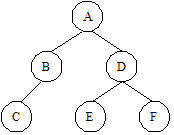

A common problem in data structures is to determine the traversal of a binary tree. There are three classic ways to do it:
Pre-order: You must visit in
sequence the root, left subtree and the right subtree.
In-order: You must visit
in sequence the left subtree, the root and the right subtree.
Post-order: You must visit in
sequence the left subtree, the right subtree and the root.
See the picture below:

The pre, in and post-order traversal are, respectively,
ABCDEF, CBAEDF and CBEFDA. In this problem, you must compute the post-order
traversal of a binary tree given its in-order and pre-order traversals.
The input set consists of a positive number C ≤ 2000, that gives the number of test cases and C lines, one for each test case. Each test case starts with a number 1 ≤ N ≤ 52, the number of nodes in this binary tree. After, there will be two strings S1 and S2 that describe the pre-order and in-order traversal of the tree. The nodes of the tree are labeled with different characters in the range a..z and A..Z. The values of N, S1 and S2 are separeted by a blank space.
For each input set, you should output a line containing the post-order
transversal for the current tree.
3
3 xYz Yxz
3 abc cba
6 ABCDEF CBAEDF
Yzx
cba
CBEFDA